雲の中の弥山さんです。
2020/08/01
雲がかかっていましたが、雨が降っていなかったので弥山に登りました。
雨が降ったらすぐ降りればいいです。
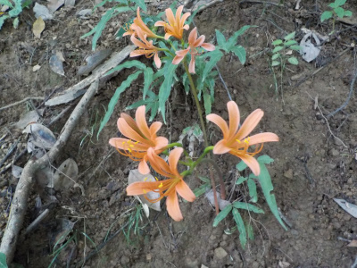
このオレンジ色の花がよく咲いていました。
キツネノカミソリって名前の花かな？ネットで検索しましたが、自信ないです。
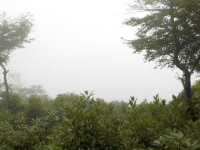
五合目から見た景色です。真っ白で視界が悪いです。
高温高湿度なせいかとっても疲れました。
雨が降ったら帰ろうって思っってたんですが、雨が降らずに山頂に到着しました。
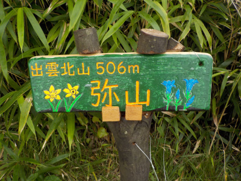
山頂には可愛くて読みやすい看板がありました。
とってもいいですね。よくできています。
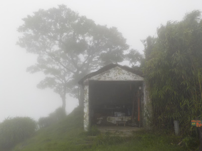
山頂は視界が悪かったです。
こうゆうのって霧って言うのかな？
水分が多いみたいで、屋根からは雫がポタポタ落ちていました。
山頂のユーチューブ動画です。
次は晴れた日に登りたいです。
春の弥山登山です。
2019/04/21
登るのは2回目なのでちょっと気楽でした。
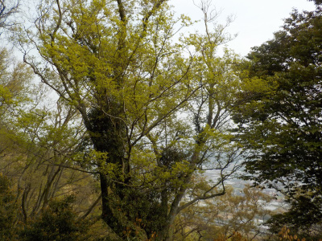
まだ若葉が小さかったです。
葉が密集していないので、風が通って涼しかったです。
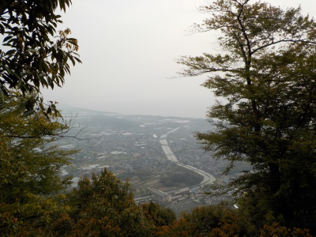
曇り空で、ちょっともやがありました。
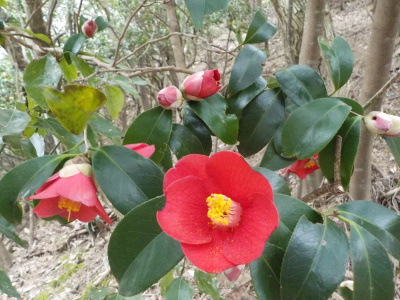
椿が咲いていました。
綺麗ですね。まだ蕾があるので、まだまだ見頃が続きそうです。
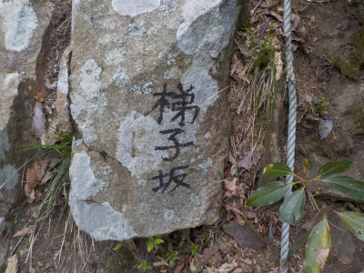
九合目の岩場に梯子坂って書いてありました。
名前あるんですね。名前あると親しみやすくていいです。
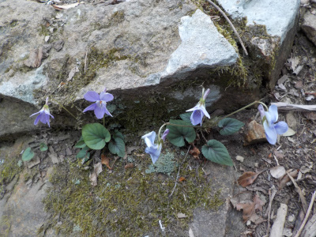
あちこちでスミレが咲いてました。
岩場でも育つんですね。
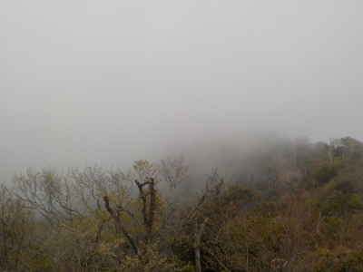
山頂は雲がありました。
雨粒の小さいのが風で横に流れてて、当たるとひんやりしました。
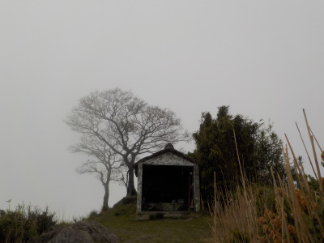
霞で遠くは見えませんでした。
真っ白です。
雨が降ったら嫌なので、ちょっと休憩してすぐ降りました。
弥山に登りました。
2017/06/04
みせん広場に車を駐車して、弥山に登ります。
上から見るとこんな感じ。
ここから北へ進みます。
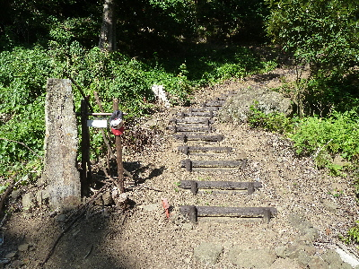
入口は整備されてて登り易いです。
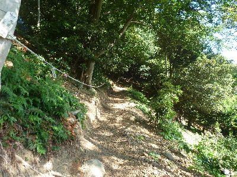
すこし歩くと自然な感じの山道になりました。
ロープが張ってあるのが、とてもありがたかったです。
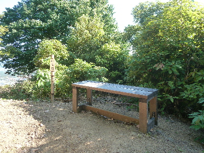
途中ベンチがあったので休憩しました。これもありがたいです。
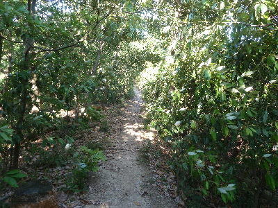
尾根は風があって気持ちよかったです。なんでここだけ風があるんだろう。
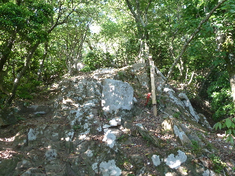
9合目からはゴツゴツした岩山登りです。
初心者の私としては、「こんなの登の？」って気分でした。ハードな感じです。
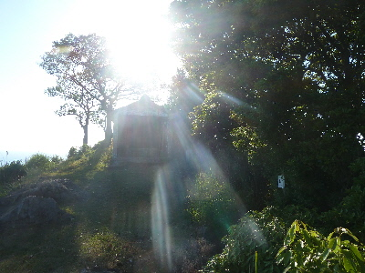
山頂の開けた場所には祠がありました。
詳しい説明はなかったかな？何の神様でしょう。
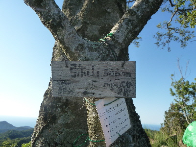
祠の奥が山頂です。
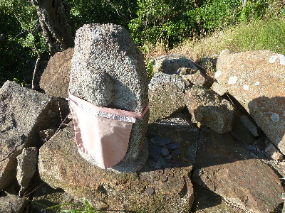
山頂の横にはおじぞう様がいました。
お金が供えてあります。
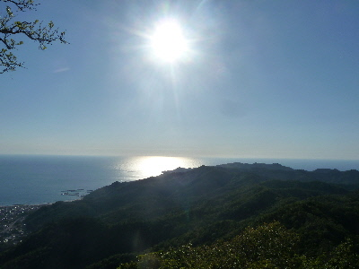
山頂からの景色です。
築港方面です。
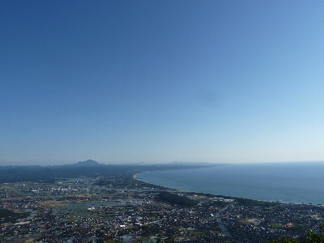
三瓶山が見えますね。その向こうの山の見えました。
今日は視界がいいなー。
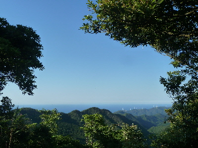
北の日本海方向です。
写真では見えないんですが、大きな島が見えました。隠岐なのかな？でもとっても大きい気がする。気のせいかな。
帰りは登って来た道を降ったんですが、坂が急なので土の上をズルって何度か滑りました。
転ぶくらいならいいですが、谷に落ちそうになったので怖かったです。
初心者にはちょっときつかったかな。次はもうちょっと上達してから登ろうと思いました。